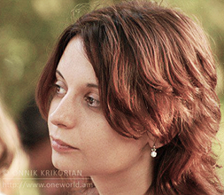
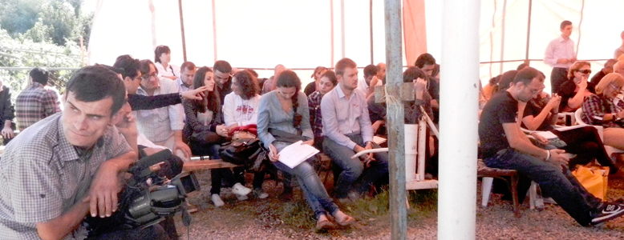
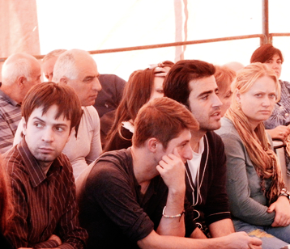
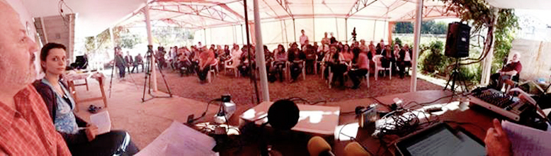
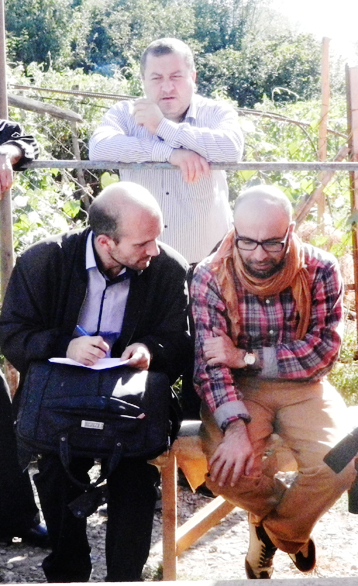

К СОЦИАЛЬНОЙ МОДЕЛИ ТРАНСФОРМАЦИИ КОНФЛИКТОВ
Потребность в социальной модели трансформации конфликтов на Южном Кавказе
Спустя 20 с лишним лет, этнополитические и территориальные конфликты, возникшие на Южном Кавказе после развала Советского Союза, в значительной степени всё еще остаются неразрешенными. После достижения хрупких перемирий в начале 90-х, были установлены международные и межправительственные форматы разрешения конфликта, однако они не привели к стабильным политическим договорам.
Люди, живущие в государствах и непризнанных образованиях на Южном Кавказе, все еще сталкиваются с последствиями неурегулированного конфликта, такими, как: запаздывающая демократизация; воздействие широкого спектра региональных и внешних факторов на правительства, что сказывается на стратегических восприятиях стабильности; торможение экономического развития из-за соображений безопасности, закрытые границы и эмбарго; большое число перемещенных лиц и беженцев, которым все еще не удается приспособиться к новой жизни, получить компенсацию за свои потери и/или полноценно интегрироваться в общество. Более того, жизнь и безопасность людей, во всех ее аспектах, подвергаются серьезному риску в регионах, все еще затронутых неразрешенными конфликтами, в особенности – в приграничных местностях, у разграничения зон контроля, у линий соприкосновения войск.
На международном уровне и в теоретической сфере растет восприятие устойчивого мира как наилучшего способа реализации человеческой безопасности (human security). Это требует компромиссов и готовности к примирению не только на уровне политических элит, контролирующих территории, но и широкой общественности, в которой представлены группы, непосредственно затронутые конфликтом. К сожалению, последние два десятилетия попытки разрешения конфликтов Южнокавказского региона в рамках международных и многосторонних форматов не только не удовлетворяют нужды безопасности, но и зачастую становятся игорными картами правительств и международных акторов для достижений и провалов в обслуживании собственных политических интересов. Кроме того, закрытость переговорного процесса на фоне отсутствия и искажения процессов демократизации во всех политических сообществах Южного Кавказа, позволяет правящим элитам использовать конфликт, его последствия, значимость стратегической стабильности для узурпации власти и подавления инакомыслия посредством ярлыка «пятой колоны».
В большинстве политических сообществ, и в частности, в трех независимых государствах Южного Кавказа есть активное гражданское общество, вовлеченное в миротворческую деятельность, выработан ценный экспертный потенциал и широкий спектр креативных концепций для смягчения изоляционизма и стимулирования примирения.
Тем не менее, эти игроки очень часто считают затрудненным свой выход на лиц, принимающих решения в своих собственных правительствах, не говоря уже о нереальности своего участия в переговорном процессе. К тому же, целевыми группами миротворческой деятельности становятся люди, которые уже мотивированы потребностью мира и примирения (в основном молодежь). Гражданское общество считает затрудненным свой доступ в более радикально настроенные группы, или в группы без восходящей социальной мобильности, то есть менее обеспеченные, не имеющие возможности получить качественное образование, медицинские услуги и др. блага. Хотя по определению, именно эти группы наиболее нуждаются в интервенции. Не полностью, но в определенной мере такие группы совпадают с группами, наиболее уязвимыми из-за последствий конфликтов – вынужденными переселенцами и беженцами, сельскими жителями, находящимися в физической близости к зоне конфликта.

Концепция социальной модели трансформации конфликта
Исходя из вышеизложенного, мы убеждены в крайней необходимости развития и усиления других форматов, которые менее сфокусированы на достижении политического разрешения конфликтов, но более – на трансформации обществ Южного Кавказа для продвижения мирных, ненасильственных форм балансирования интересов и преодоления разногласий. Такие форматы должны применять более целостный подход, охватывая концепцию человеческой безопасности (human security) во всех ее аспектах, и, посредством этого актуализировать, по существу, взаимосвязанность процессов миротворчества, внутренней демократизации, соблюдения прав человека и защиты этих прав.
Мы убеждены, что систематическое и стратегическое вовлечение гражданского общества и затронутых конфликтом групп населения в процессы трансформирования конфликтов на нынешнем этапе, осложнены не только деформациями в государственном управлении, но и деформациями самого гражданского общества. Одним из факторов, сдерживающих устойчивое гражданское вовлечение, является отсутствие стабильных платформ, способных выработать компромиссные концепции для трансформирования конфликта, которые могут быть поддержаны широким кругом внутриобщественных объединений. По существу, сектор «организованного» гражданского общества раздроблен в силу политических, идеологических и даже личных конфликтов.
Для устранения этих недостатков мы предлагаем процесс, который приведет к тому, что мы называем «социальной моделью трансформирования конфликта». Модель эта, по своей сути, будет решать вопросы координации, формализации и институционализации общественных акторов, вовлеченных в процесс трансформации конфликта. Реализовав эти три предусловия гражданских акций, мы рассчитываем приобрести модель повышения легитимности гражданского общества как миротворческого актора как внутри обществ, так и в среде правительственных и международных акторов.

■ Легитимность действий гражданского общества в миротворчестве
Отсутствие демократической среды на Южном Кавказе не должно становиться прикрытием и поводом для замалчивания того факта, что гражданские активисты и сами несут определенную ответственность за то, что их общества не воспринимают их в качестве легитимных акторов в трансформации конфликта. По определению, гражданский активизм преследует плюралистический подход для поиска путей решения социальных проблем, включая те, которые являются последствиями конфликта. Однако гражданское общество пока не выдвинуло устойчивой концепции сочетания этого множества подходов на базе минимально необходимого консенсуса. Для этого гражданским активистам пришлось бы преодолевать свои собственные барьеры, вроде рубежей между городом и деревней, политические симпатии, идеологические установки, рубежи между поколениями, гендерные проблемы и т.д. Легитимность должна основываться общих инициативах гражданских организаций и людей, особенно групп пострадавших от конфликтов и живущих вдоль линии соприкосновения. Легитимность также требует, чтобы гражданский сектор идентифицировал и анализировал проблемы и предлагал модели и формы их решения.
■ Координация и формализация
Более действенное гражданское участие в трансформации конфликта требует лучшей координации и более целенаправленных совместных акций. Международные и местные акторы признавая это, продвигают создание неправительственных сетей. Однако на сегодня есть также:
- инициативы, профинансированные конкретными проектами или программами, которые сводятся на нет после завершения календарного срока проекта/программы; или
- инициативы, которые не связаны с конкретными проектами и, следовательно, испытывают недостаток финансовых ресурсов, и, следовательно, не могут предполагать действия, имеющие видимый общественный эффект.
В последние несколько лет особую роль в этом контексте играли Национальные платформы Восточного партнерства ЕС в Армении, Азербайджане и Грузии. Эти платформы обеспечивают неправительственным организациям в различных секторах важную возможность нетворкинга – объединения в сеть и работы внутри этой сети. В то же время, они страдают от существенных недостатков. Применительно к трансформации конфликтов, самым серьезным из этих недостатков, является то, что Европейский Союз не является непосредственным актором в разрешении конфликтов, и тем самым пребывает в области “политического диалога” между ЕС и странами-партнерами. Наряду с этим, платформы пока еще работают, главным образом, на национальном уровне и не содержат каких-либо составных структур, которые позволили бы систематически привлекать непризнанные образования (Абхазию, Нагорный Карабах и Южную Осетию), что, в свою очередь, затрудняет региональное сотрудничество.
Мы полагаем, что коллективная деятельность гражданского общества нуждается в более широкой и более устойчивой координации и формализации, что закономерно вытекает из специфики региональных делений и барьеров. Любому подобному объединению будет нужен этический устав и/или кодекс, а также демократические структуры (с принципами ротации для лиц, принимающих решения), для того чтобы оно было способно работать в недискриминационной и прозрачной среде. Такие объединения укрепят действия, основанные на естественных совместных усилиях, и будут способствовать эффективному использованию ресурсов, когда они начнут повышать информационные потоки внутри гражданского общества и в то же время сократят нездоровые формы соперничества в гражданском обществе.
■ Институционализация
Институционализация гражданского общества как игрока в трансформации конфликтов требует определенной консолидации подходов и задач. На текущей стадии первоочередную важность имеет легитимизация действий гражданского общества в глазах более широкого круга людей и тех групп, которые номинально представлены гражданским обществом. В свою очередь, это потребует, чтобы гражданские игроки следовали в своих вмешательствах неким базовым принципам, а именно:
- Эффективность: обслуживание реальных нужд целевых групп, выбор средств и подходов для положительных результатов, или в крайнем случае, гарантирующих соблюдение принципа «не навреди»;
- Прозрачность: гражданские действия должны быть обоснованными, понятными и подотчетными как в рамках организаций/сетей, так и в своей внешней деятельности. Внутреннее управление и процесс принятия решений демократических принципов должны регулироваться демократическими механизмами;
- Приверженность принципам демократии: ненасилию (включая словесное выражение и внутренние структуры), плюрализму, толерантности и включенности (inclusiveness).
С максимальным использованием имеющихся возможностей гражданские акторы должны стремиться к своей легитимности в отношениях с собственными правительствами и институтами, в особенности на местном уровне. Подобный подход будет способствовать гражданским акторам учредить институты, которые:
- могут поддерживать государственные учреждения экспертизой или «поставкой услуг»;
- станут важными структурами вертикальной подотчетности, связывая граждан с законодательной и исполнительной властью, особенно на местном уровне;
- будут грамотно защищать права и интересы представляемых ими групп населения, будут способны формулировать и предлагать адекватные решения для идентифицированных проблем.
Мы признаём, что подобной институционализации гражданских игроков на Южном Кавказе будет трудно добиться в короткие сроки из-за серьезных проблем демократизации и государственного управления. В этом контексте, международные игроки – такие, как международные организации, международные НПО, правительства других государств через свои дипломатические миссии служат для местных гражданских акторов важными символами легитимности. Если гражданские игроки способны взаимодействовать стратегически, актуализируя и обеспечивая решение конкретных ключевых проблем, предоставляя адекватную экспертизу и реально защищая интересы своих целевых групп, то степень институционализации гражданского общества в трансформации конфликтов может существенно повысится посредством сотрудничества с соответствующими международными организациями.

Текалинский процесс: к социальной модели трансформации конфликтов
Текалинский процесс стартовал в начале 2011 г. в виде нерегулярных серий встреч, собирающих вместе активистов гражданского общества, политологов, журналистов, художников и представителей общественной интеллигенции из Армении, Азербайджана и Грузии в селе Текали. Есть несколько обоснований выбора именно Текали для старта нового социально-ориентированного процесса построения мира и доверия:
- Обеспечение пространства дискуссий и взаимодействия гражданских деятелей трех государств Южного Кавказа, выявления схожих проблем и выдвижения способов их решения. В дополнение к этому, армянским и азербайджанским активистам дается возможность встречаться и преодолевать обоюдную изоляцию их обществ.
- Перемещение процесса гражданского миротворчества из столиц и предоставить различным слоям общества (находящимся организованного гражданского общества) возможность обсуждать вопросы, касающиеся конфликта и сотрудничества. Вместе с тем, в Текали вовлекаются представители общин, расположенных вдоль армяно-азербайджанской границы, где люди живут в условиях отсутствия безопасности, в зоне перестрелок, мин и снарядов, и других угроз. Тем самым, Текалинский процесс открыт для групп, которые непосредственно страдают от конфликта.
- Осуществление обмена мнениями в атмосфере, которая является примером взаимного сосуществования различных этнических групп, тем самым отрицая нарратив естественной (primordial) ненависти между народами.
- Продвижение подхода: местные решения - для местных проблем, то есть инициировать решение проблем сосуществования и коммуникации на местном уровне, реально работая в этом направлении «снизу вверх», решением локальных проблем человеческой безопасности.
Текалинский процесс уже провел ряд встреч между активистами, интеллектуалами, журналистами и другими заинтересованными сторонами, взяв за основу формат обсуждений между представителями каждой из трех Южно-Кавказских стран, с сессиями “свободный микрофон”, позволяющими всем участникам озвучить свои идеи, комментарии и предложения, и совместным обедом для всех участников.
Сформировалось ядро участников, которые регулярно посещают встречи, наряду с дополнительной аудиторией из числа местных жителей, гражданских активистов, представителей международных организаций, миссий, международных NGO. В июне 2013 года, участники Текалинского процесса по приглашению члена парламента Германии Виолы фон Крамон приняли участие на конференции в Бундестаге для представления там процесса как модели трансформации конфликтов. Тогда же была основана постоянная рабочая группа для продвижения Текалинского процесса.
Текалинский процесс находится на самой начальной стадии предлагаемой нами модели. В качестве последующих шагов мы, предлагаем:
- способствовать продвижению формализации процесса путем разработки устава и кодекса этики, что заложит основы демократических и прозрачных организационных структур и процесса принятия решений;
- совершенствовать коммуникационные мероприятия для того, чтобы сделать процесс более видимым, особенно – для потенциальных участников (местное население, местные власти, журналисты, местные НПО) из затронутых конфликтом общин вдоль армяно-азербайджанской границы; и
- приступить к усилению процесса и возможностей его участников в продвижении местных инициатив. С этой целью члены рабочей группы собирают предложения и намерены подготовить конкретный план формирования гражданских групп мониторинга прав человека вдоль армяно-азербайджанско-грузинских границ, которые будут выявлять и публиковать факты нарушений прав человека, совместно работать для устранения этих нарушений совместными действиями по обе стороны границ.
Помимо FIC (formalization, institutionalization, coordination), данная концепция является совокупностью идей, выработанных за последнее десятилетие экспертами и специалистами-практиками Южного Кавказа в сфере разрешения конфликтов. К примеру, проекты, осуществленные Кавказским Центром Миротворческих Инициатив (КЦМИ), одни из тех, которые проявляют дееспособные модели регионального сотрудничества и предоставляют готовый форум для развития общественной модели разрешения конфликтов в регионе. Грузинское село Текали является географическим центром Южного Кавказа, оно периодически принимает встречи представителей гражданского общества и посреднические проекты, которые осуществляет КЦМИ. Эти встречи и мероприятия собирают вместе гражданских активистов и журналистов из всех трех стран Южного Кавказа. Число участников мероприятий в Текали постоянно растет со времени первой встречи, состоявшейся в начале 2011 года, что свидетельствует о необходимости подобного форума, о потребности в нем.
Дебаты вокруг вопросов институционализации продолжаются. Наряду с тем, что есть общее согласие о том, что подход FIC должен быть всецело региональным и охватывать все народы и территории Южного Кавказа, меньше согласия по поводу того, какими должны быть его первоочередные функции. Одни приводят такой довод: любая предложенная Хартия и устанавливаемые ею механизмы институционализации должны быть направляемы исключительно на разрешение конфликта – для установления мира и добрососедства между народами Южного Кавказа.
Другие же ратуют за более широкий подход, направленный на продвижение региональной интеграции и сотрудничества. Они указывают на неформальное торговое сотрудничество между общинами в зоне конфликта, как, например, армяно-азербайджанский оптовый рынок, который возник и расширился в Садахло, Грузия, и на некоторые другие примеры. Тем не менее, общее согласие о необходимости защиты и продвижения прав человека, ценностей демократии и социальной справедливости должно быть основополагающим принципом Устава (Хартии) и Организации (независимо от ее конечной формы и статуса).
Существует пока очень мало предложений и соображений по администрированию и технической стороне создания подобного предприятия. Пока не выработаны фондрайзинговые (поиск и добывание финансовых ресурсов) и бюрократические стратегии. Имеется ряд серьезных препятствий, и нужно выработать способы для их преодоления. На данной стадии требуется применить некоторое давление для координирования следующих обсуждений, для выведения их за рамки предположений и конъектуры, и направления к практическим результатам.
Марион Кипиани
27-09-2013
Текали
Грузия
Перевод с английского: Ашот Гарегинян

Кавказский Центр Миротворческих Инициатив

© Ассоциация Текали - info@southcaucasus.com